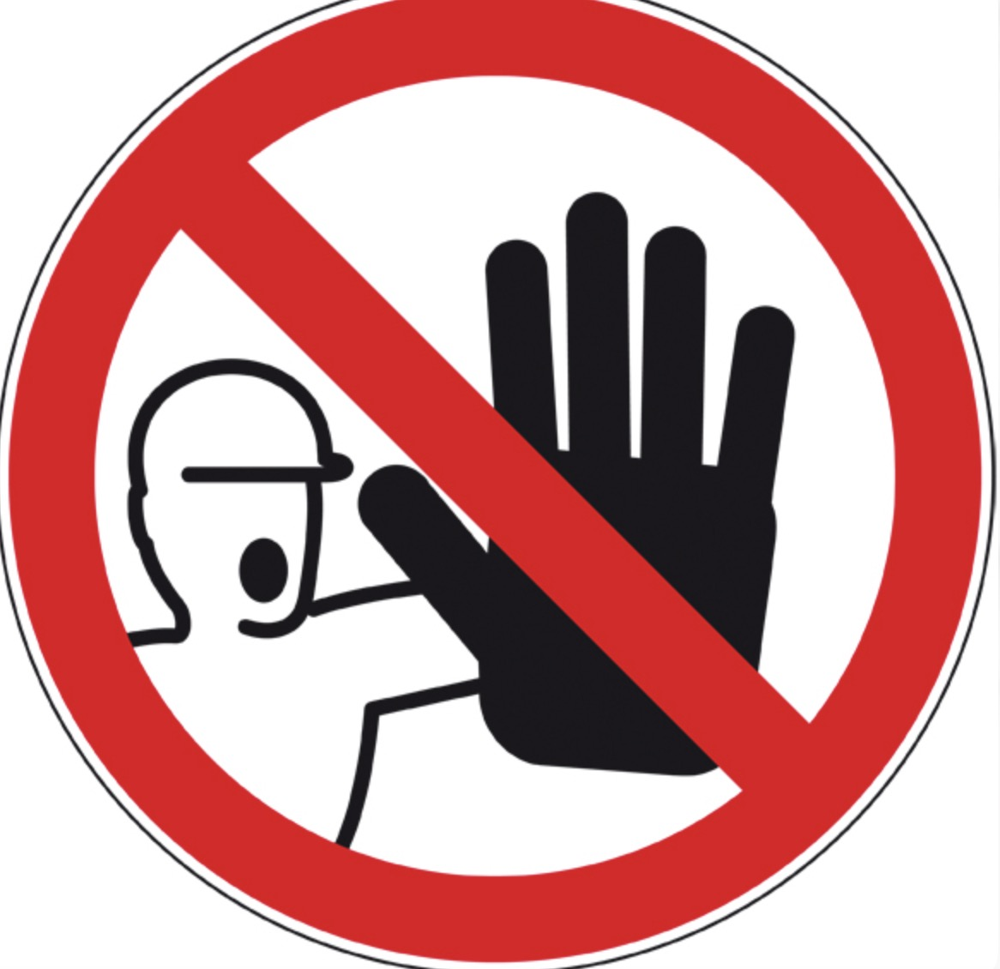

SITUATION
ANALYSER LA SITUATION
Pour la deuxième fois en quatre jours, l'usine Hydrapro, classée Seveso, a déclenché son plan d'opération interne entraînant l'intervention des sapeurs-pompiers à 5 h 45, ce vendredi matin. Une fois encore, un dégagement de fumée s'est déclaré à l'intérieur de l'usine spécialisée dans la fabrication de produits chlorés pour le traitement de l'eau. L'usine est située à Lédenon, dans le Gard.
Face aux risques chimiques et les conséquences pour l'environnement et la santé des habitants, la préfète du Gard a déclenché à 6 h 45 le plan particulier d'intervention. Ce plan a entraîné des mesures de protection de la population (confinement des habitants proches, évacuation des salariés de l'usine et d'une autre société située à proximité, mesures de sécurisation du site de l'exploitant).
Source : Jérôme Diesnis, 20minutes.fr, 07/07/2023
Explication : Le plan d'opération interne est déclenché lorsqu'un incident se produit dans l'entreprise. Ici, c'est le dégagement de fumée qui a causé le déclenchement.
Explication : Le plan particulier d'intervention est déclenché par les autorités préfectorales lorsque les conséquences de l'accident dépassent les limites de l'entreprise.
Explication : L'usine fabrique des produits chlorés qui peuvent être dangereux. Les fumées peuvent contenir des substances toxiques nécessitant de protéger la population.
Selon le Code du travail, il est obligatoire pour toutes les entreprises, quelle que soit leur taille, d'afficher les consignes de sécurité incendie (articles R4227-34 à R4227-38). Sur cet affichage doivent apparaître le nom des responsables du matériel de secours et des personnes chargées de l'évacuation. Le plan d'évacuation en cas d'incendie doit être visible dans les voies de circulation et doit être connu de tous les salariés. Les locaux sont équipés d'un matériel de premiers secours adapté à la nature des risques et facilement accessible (article R4224-14 du Code du travail). En fonction de la situation, une alarme visuelle et/ou sonore doit permettre une évacuation des locaux ou une intervention des secours optimale.

🔥 Incendie
Toute personne qui découvre un début d'incendie doit :
- déclencher l'ordre d'évacuation en appuyant sur le boîtier d'alarme le plus proche ;
- téléphoner :
- • au standard : poste 3022
- à défaut
- • aux pompiers : 18
🚪 Évacuation
L'ordre d'évacuation est donné par un signal d'alarme de 10 secondes. Dès que cet ordre est donné, il faut quitter immédiatement l'entreprise :
- utiliser les voies de secours ;
- ne pas fermer les portes à clé.
🚑 Accident ou urgence médicale
Toute personne témoin d'un accident ou d'une urgence médicale doit :
- téléphoner :
- • au service de secours interne : poste 3105
- Ou à défaut :
- • au SAMU : 15
- envoyer une personne à l'entrée de l'entreprise pour guider les secours.
📍 Plan d'évacuation - LÉGENDE
Procédure
Local technique - Bureau d'étude - Esc. 2 - Esc. 1 - Plan d'évacuation - Vestiaire - Atelier découpe - Atelier découpe - Secrétariat - Bureau directeur - Signalisation
Explication : Ces deux types d'alarme permettent d'alerter tous les salariés, même ceux qui ne peuvent pas entendre (alarme visuelle) ou voir (alarme sonore).
Explication : Dans les ateliers bruyants, les ouvriers portent des casques anti-bruit qui les empêchent d'entendre l'alarme sonore. L'alarme visuelle (flash lumineux) leur permet d'être alertés visuellement.
Explication : En suivant le plan d'évacuation depuis l'emplacement "Vous êtes ici", la voie de secours la plus directe passe par l'escalier numéro 1.
| PANNEAU | SIGNIFICATION | VOTRE RÉPONSE |
|---|---|---|
A  |
1. Obligation de porter un casque anti-bruit | |
B  |
2. Évacuation, sortie | |
| C  | 3. Signal à déclenchement manuel | |
| D | 4. Interdiction d'entrer |
Explication : Ces pictogrammes sont standardisés pour la sécurité. A correspond à la sortie de secours, B au déclencheur d'alarme, C à l'interdiction d'accès, et D à l'obligation de porter des protections auditives.
Explication : C'est le service de secours interne de l'entreprise. Il faut d'abord contacter les secours internes avant les secours externes.
Explication : En cas d'incendie, l'alimentation électrique peut être coupée ou endommagée, bloquant l'ascenseur entre deux étages. Les escaliers restent toujours accessibles.
Explication : Guider les secours permet d'éviter qu'ils perdent du temps à chercher l'entrée ou le lieu exact de l'accident, ce qui peut être vital pour la victime.
🎯 AUTO-ÉVALUATION - Séance 1
Organisation des secours et moyens d'alerte
Question 1 - QCM
Quels sont les deux types d'alarme obligatoires en entreprise ?
Question 2 - Vrai/Faux
L'ascenseur peut être utilisé lors d'une évacuation incendie.
Question 3 - Réponse courte
Citez le numéro d'urgence pour les pompiers.
Question 4 - QCM
Que signifie le pictogramme de sortie de secours ?
Question 5 - Réponse courte
Expliquez en une phrase l'intérêt de l'alarme visuelle dans les ateliers.
Question 6 - QCM multiple
Que doit contenir l'affichage des consignes de sécurité ? (Plusieurs réponses)
Question 7 - Vrai/Faux
Il faut fermer les portes à clé lors de l'évacuation.
Question 8 - Réponse courte
Quel est le poste de secours interne à contacter en priorité chez Vamexo ?
Question 9 - QCM
Quelle est la durée du signal d'alarme d'évacuation ?
Question 10 - Réponse courte
Pourquoi envoyer quelqu'un à l'entrée pour guider les secours ?